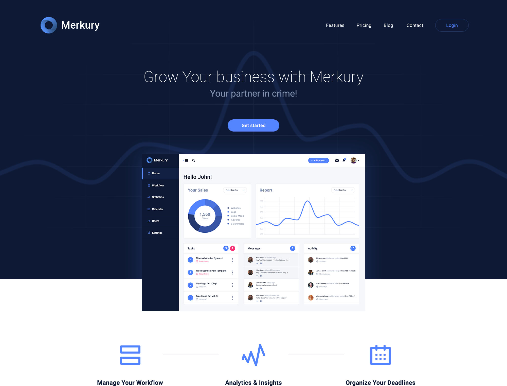
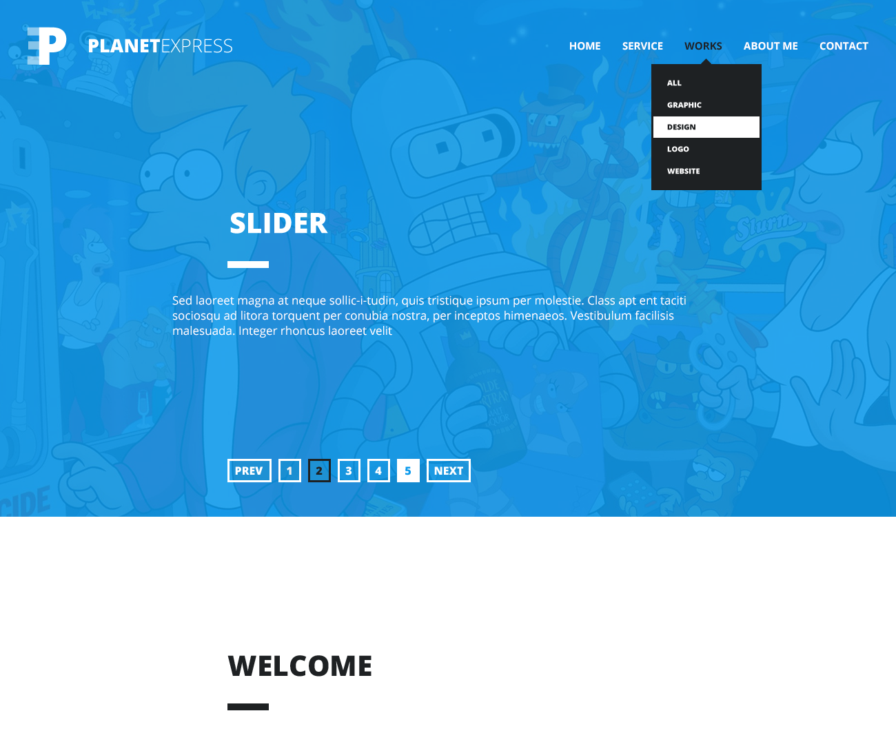
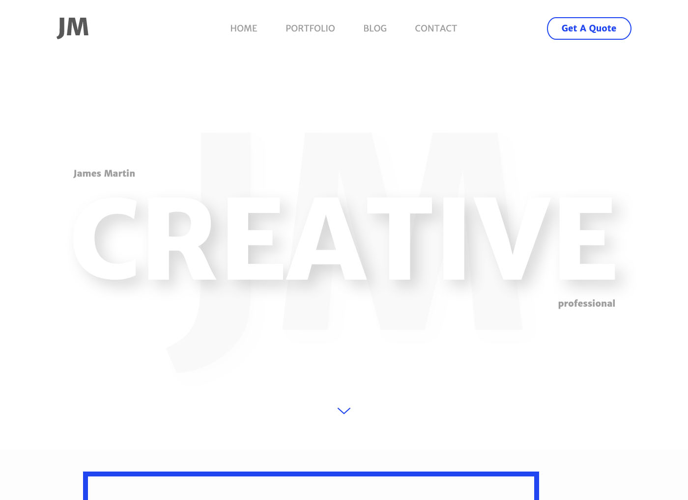
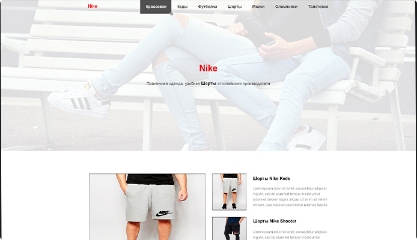
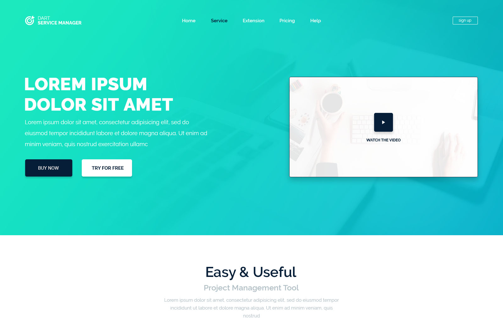
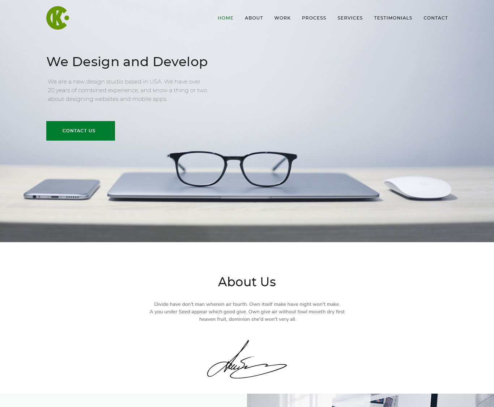
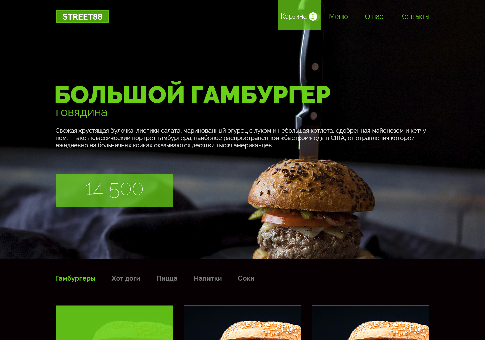
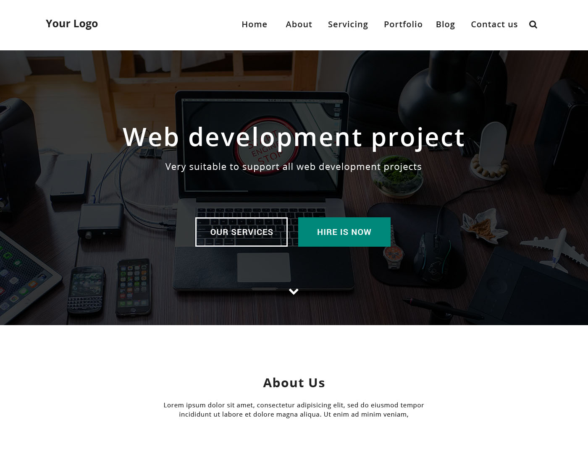

ABOUT
Fast
Fast load times and lag free interaction, my highest priority.
Responsive
My layouts will work on any device, big or small.
Intuitive
Strong preference for easy to use, intuitive UX/UI.
Dynamic
Websites don't have to be static, I love making pages come to life.
PROJECTS

Merkury
Merkury helps small and medium businessese achieve IT efficiencies needed to succeed in today’s digital world. Specializations include Advanced IT Datacenters, Mobility, Security and Networking and transformations enabled by Hybrid IT/Cloud Services. Merkury turned to us to launch a new Website and brand communication strategy that resonated with specific use case aimed to the customer's business growth and expansion. We developed the project, looking back to their direct response strategy and developed the website with modern responsive programming techniques
Visit Website
Planet Express
Planet Express is a delivery company that is operating on the territory of Canada and the USA with the hub based in St. Louis, Missoury. When the people behind Planet Express approached us, I understood their business requirements are about being fast and comfortable. As we knew what it takes for an online delivery business to attract more users, we recommended our vision of the website as the solution. Keeping the future of the business in mind, we helped establish a connection between company and people throught comfortable and clear website.
Visit Website
James Martin
James Martin, for more than 15 years, has helped the world’s leading image-makers communicate visually with their audiences and customers. JM is a leading supplier of printing, digital imaging, multimedia, wide format graphics and graphic display services. JM turned to us to assemble their history as a brand, their project and vision into a special website. The new desktop, tablet and mobile website tells that JM is the leading supplier of visually appealing printing, digital imaging, multimedia, wide format graphics and graphic display services.
Visit Website
Nike Uzbekistan
Nike Uzbekistan offers casual and stylish clothes collections that makes you look like the special one. Using the highest quality materials, Nike strive to exceed our expectations and have built a reputation as solid as thier products. When Nike came to the Uzbek market, they asked to develop a special website, that will be the representation of their unique philosphy. As a result, you can see that the whole website is about the minimalistic but stylish approach to the design of the Website.
Visit Website
Dart Website
DartDart provides consumer analytics solution to many communication service providers. They provide a variety of services such as big data platform, integrated analytics, telecom marketing consultation; big data managed service, insight monetization services, and more. Dart approached us for a complete website redesign. After carefully analyzing the requirements, we came up with the design recommendations, which resulted in a beautiful responsive website that provides a smooth experience across all screen sizes.
Visit Website
MacDesign
MacDesign is a web solution provider of New Zeeland that offers a wide range of technology solutions like digital branding, custom web design, and value engineering. Taika Waitity, the Chief Financial Officer of MacDesign group wanted a subtle design that could educate as well as represent the company. We created the website from scratch after pulling together the requirements list and blueprinting the design. Designed for the businesses that want to adapt with ever-growing sphere of technology, this project is appreciated for well-crafted UX.
Visit Website
Street-88
Street-88was established in 2016, in Tashkent, Uzbekistan. Since then, Street-88 has risen to the level of country phenomenon with stores in the main cities of Uzbekistan, with more to open in post-soviet countries in 2021. Street-88 turned to us to create the new Street-88 Website that showcases delicious and quality fast food. We developed the website throught Street-88 brand messaging strategies as well as visual design, and developed a tasty and zesty responsive Website with a strong UX design experience across desktop, tablet, and mobile browsers.
Visit Website
InWeb
InWeb is one of the oldest web-design, visual and art creating company in Uzbekistan. Established in 1998, InWeb was the pioneer of the desing in Uzbek Internet section. They approached us with the plan to desing a new brand-styled website that would resonate with their customers, history of the InWeb and their bringt vision of the design. So, we decided to create a fresh, clean and minimalistic website that shows potential customers that InWeb is a professionals in terms of the Design.
Visit Website
Pizzeria
Nike Uzbekistan is a young and very agressive brand that was founded in 2018, in Tashkent, Uzbekistan. Their main aim is to bring the tastiest, cheapest and most favourite pizza to each potential customer. For Pizzeria, we developed the base desing styles as well as the branding code of the company. After this, we started to work with the website and decided to step back from the traditional approach and decided to create something new and innovative.
Visit WebsiteCONTACT
Have a question or want to work together?